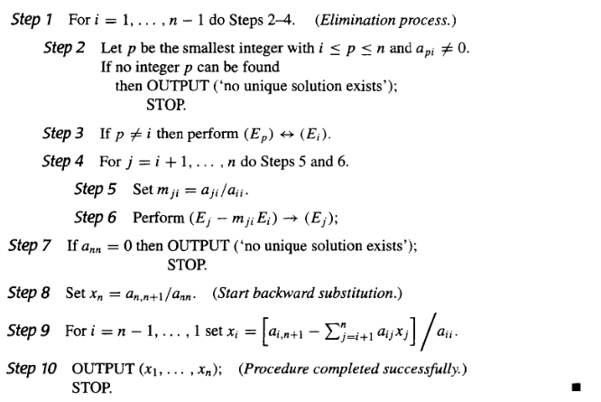
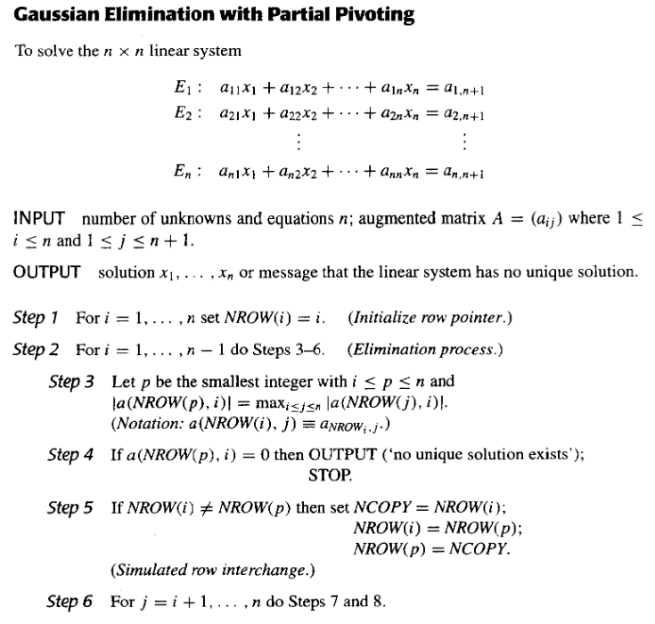
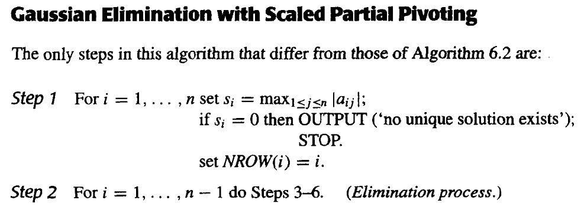
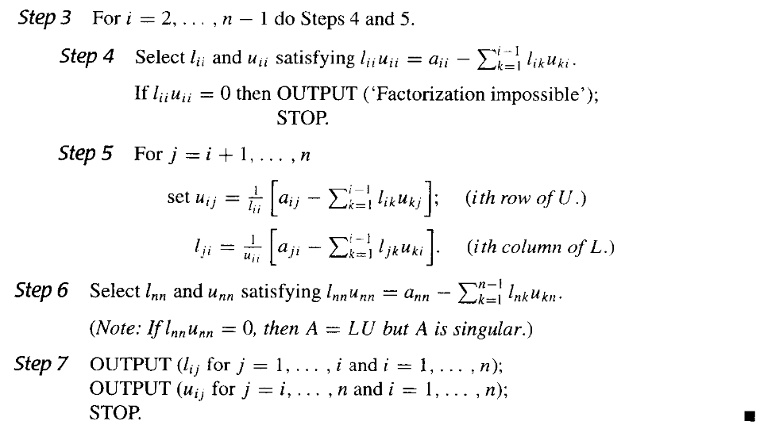
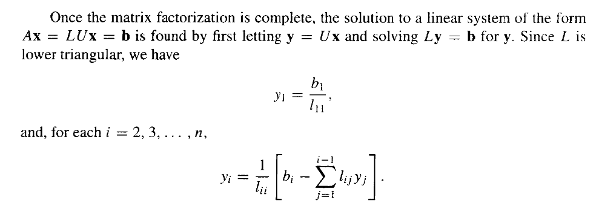
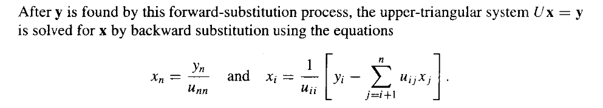
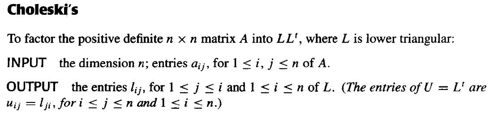

Chapter 6 解线性方程组的直接法 | Direct Methods for Solving Linear Systems¶
约 2836 个字 预计阅读时间 14 分钟
6.1 回代的Gauss消去法 | Gaussian elimination with backward substitution¶
算法内容¶
解方程组\(\mathbf{A}\vec{x}=\vec{b}\)，记\(\mathbf{A}^{(1)}=\mathbf{A}=a_{ij}^{(1)}\)，\(\vec{b}^{(1)}=\vec{b}=\begin{pmatrix}b_{1}^{(1)}\\b_{2}^{(1)}\\\vdots\\b_{n}^{(1)}\end{pmatrix}\)，\(\vec{x}^{(1)}=\vec{x}=\begin{pmatrix}x_{1}^{(1)}\\x_{2}^{(1)}\\\vdots\\x_{n}^{(1)}\end{pmatrix}\)，则增广矩阵\(\tilde{\mathbf{A}}\)为：
通过高斯消元我们可以得到新的增广矩阵\(\tilde{\mathbf{A}}^{(k)}\)：
第\(1\)次迭代过程为：如果 \(a_{11}^{(1)}\neq 0\) ，记 \(m_{i1}= {a_{i1}^{(1)}}/{a_{11}^{(1)}}\) ，则
第\(t\)次迭代过程为：如果\(a_{tt}^{(t)}\neq 0\)，记 \(m_{it}={a_{it}^{(t)}}/{a_{tt}^{(t)}}\) ，则
如果\(a_{tt}^{(t)}=0\)，则交换第\(t\)行与第\(k\)行，使得\(a_{kk}^{(k)}\neq 0\)，然后再进行第\(k\)次迭代。如果找不到\(a_{kk}^{(k)}\neq 0\)，则方程组没有唯一解，算法停止。
写成伪代码如下：

计算次数¶
由于在计算机上完成乘法或除法所需的时间大致相同，且大于完成加法或减法所需的时间，所以我们分开考虑乘法和除法的计算次数。
对上述算法进行分析，可以得到计算次数如下：
消元过程¶
在每个 \(i\) 中，
Step 5需要完成 \(n-i\) 次除法，Step 6由 \(E_j-m_{ji}E_i\) 代替方程 \(E_j\) 的过程中，对每个 \(j\) ，需要完成 \(n-i+1\) 次乘法和 \(n-i+1\) 次减法。所以共需要完成 \((n-i)(n-i+1)\) 次乘法和 \((n-i)(n-i+1)\) 次减法。
所以，消元过程共需要完成 \(\sum\limits_{i=1}^{n-1}((n-i)+(n-i)(n-i+1))\) 次乘法/除法和 \(\sum\limits_{i=1}^{n-1}(n-i)(n-i+1)\) 次加法/减法。
即消元过程共需要完成 \(\frac{1}{3}n^3+\frac{1}{2}n^2-\frac{5}{6}n\) 次乘法/除法和 \(\frac{1}{3}n^3-\frac{1}{3}n\) 次加法/减法。
回代过程¶
Step 8 需要完成 \(1\) 次除法。
在每个 \(i\) 中，
Step 9需要完成 \(n-i\) 次乘法和 \(n-i-1\) 次加法（对每个相加项），然后是一次减法和一次除法。
所以，回代过程共需要完成 \(1+\sum\limits_{i=1}^{n-1}((n-i)+1)\) 次乘法/除法和 \(\sum\limits_{i=1}^{n-1}(n-i)\) 次加法/减法。
即回代过程共需要完成 \(\frac{1}{2}n^2+\frac{1}{2}n\) 次乘法/除法和 \(\frac{1}{2}n^2-\frac{1}{2}n\) 次加法/减法。
总计算次数¶
乘法/除法：
加法/减法：
从这里我们可以得知，高斯消元法的算法复杂度为\(O(N^3)\)
6.2 选主元策略 | Pivoting Strategies¶
在上个算法中，我们观察到，如果与\(a_{jk}^{(k)}\)相比，\(|a_{kk}^{(k)}|\)很小，那么乘数\(m_{ik}^{(k)}=\frac{a_{ik}^{(k)}}{a_{kk}^{(k)}}\)就会很大，这样就会导致误差的积累。而且在代换时，\(x_{k}^{(k)}\)的值也会很大，这样就会导致误差的积累。所以我们需要选取一个合适的主元，使得误差的积累最小。
部分主元选取策略 | Partial Pivoting¶
我们考虑选择一个比较大的元素作为主元，这样就可以减小误差的积累。
所以我们可以在每次迭代时，从第\(k\)行开始，选取该列中绝对值最大的元素作为主元，然后再进行消元。
伪代码如下：


比例因子选取策略 | Scaling Partial Pivoting¶
这个方法通过比较"每一行的元素都除以该行的最大元素的绝对值"，然后通过这个结果进行部分主元选取策略，再对原方程组部分进行行交换，从而选取主元。
这里的比例因子就是每一行的最大元素的绝对值，即
比例因子只在初始过程中计算一次，然后在每次迭代过程中，比例因子也需要参与交换。
伪代码与部分主元策略的差别如下：


全主元选取策略 | Complete Pivoting¶
上个算法中，比例因子只在初始过程中计算一次。如果考虑到过程被修改，使得每次作行变换的决定时，要确定新的比例因子，那这种方法就是全主元选取策略(Complete Pivoting)。
6.5 矩阵分解 | Matrix Factorization¶
LU分解 | LU Factorization¶
假设Gauss消去法在此次解方程后没有进行行交换，Gauss消去法的第一步是对\(j=2,3,\cdots,n\)行进行计算：
那我们可以把这个过程写成矩阵的形式：
记最左边的矩阵为 \(\mathbf{M}^{(1)}\)，中间的矩阵为 \(\mathbf{A}^{(1)}\)，右边的矩阵为 \(\mathbf{A}^{(2)}\)，则有 \(\mathbf{M}^{(1)}\mathbf{A}^{(1)}=\mathbf{A}^{(2)}\)。
这里的\(\mathbf{M}^{(1)}\)称作第一Gauss交换矩阵（first Gauss transformation matrix）。
用\(\mathbf{b}^{(2)}\)表示\(\mathbf{b^{(1)}}\)经过第一次Gauss消去法后的结果，则有\(\mathbf{A}^{(2)}\mathbf{x}=\mathbf{M}^{(1)}\mathbf{A}^{(1)}\mathbf{x}=\mathbf{M}^{(1)}\mathbf{b}^{(1)}=\mathbf{b}^{(2)}\)。
一般的，如果\(\mathbf{A}^{(k)}\mathbf{x}=\mathbf{b}^{(k)}\)已经构建，则由第\(k\)个Gauss变换矩阵：
则有\(\mathbf{A}^{(k+1)}\mathbf{x}=\mathbf{M}^{(k)}\mathbf{A}^{(k)}\mathbf{x}=\mathbf{M}^{(k)}\mathbf{b}^{(k)}=\mathbf{b}^{(k+1)}\)。
这个过程结束在第\(\mathbf{A}^{(n)}\mathbf{x}=\mathbf{b}^{(n)}\)，这里的\(\mathbf{A}^{(n)}=\mathbf{M}^{(n-1)}\mathbf{A}^{(n-2)}=\cdots=\mathbf{M}^{(n-1)}\mathbf{M}^{(n-2)}\cdots\mathbf{M}^{(1)}\mathbf{A}^{(1)}\)。由高斯消元法知道，\(\mathbf{A}^{(n)}\)是一个上三角矩阵。
此过程就形成了\(\mathbf{A}=\mathbf{L}\mathbf{U}\)的分解中的\(\mathbf{U}\)部分，而\(\mathbf{L}\)部分就是上文\(\mathbf{A}\)左侧矩阵的逆矩阵，即(\(\mathbf{M}^{(n-1)}\mathbf{M}^{(n-2)}\cdots\mathbf{M}^{(1)})^{-1}=\mathbf{M}^{(1)^{-1}}\mathbf{M}^{(2)^{-1}}\cdots\mathbf{M}^{(n-1)^{-1}}\)。
因为\(\mathbf{M}^{(k)}\)的逆矩阵就是把对角线下方的元素取反，所以\(\mathbf{L}\)的元素为：
所以
由此我们可以得到：
如果Gauss消去法在线性方程组\(\mathbf{A}\vec{x}=\vec{b}\)中没有进行行交换，则\(\mathbf{A}=\mathbf{L}\mathbf{U}\)， 其中
如果\(L\)是单位下三角矩阵，则这个分解是唯一的。
用反证法。
如果\(\mathbf{A}=\mathbf{L}_1\mathbf{U}_1=\mathbf{L}_2\mathbf{U}_2\)，其中\(\mathbf{L}_1\)和\(\mathbf{L}_2\)是单位下三角矩阵，\(\mathbf{U}_1\)和\(\mathbf{U}_2\)是上三角矩阵。则有
因为上三角阵的逆依然是上三角阵，下三角阵同理。所以等式左右分别为上三角阵和下三角阵。又因为\(\mathbf{L_1}^{-1}\mathbf{L_2}\)的对角线上的元素均为\(1\)，所以两式相等当且仅当
即\(\mathbf{U_1}=\mathbf{U_2}\)，\(\mathbf{L_1}=\mathbf{L_2}\)。
所以这个分解是唯一的。
伪代码¶
先进行LU分解。


解第一个方程\(\mathbf{L}\vec{y}=\vec{b}\)。

解第二个方程\(\mathbf{U}\vec{x}=\vec{y}\)。

6.6 特殊类型的矩阵 | Special Types of Matrices¶
严格对角占优矩阵 | Strictly Diagonally Dominant Matrices¶
如果对矩阵\(\mathbf{A}\)的每一行，对角线上的元素的绝对值大于该行上其他元素的绝对值之和，则称\(\mathbf{A}\)为严格对角占优矩阵。
定理：严格对角占优矩阵是非奇异的。而且，在此情况下，Gauss消去法可用在形如\(\mathbf{A}\vec{x}=\vec{b}\)的方程组中以得到唯一解，而且不需要进行或列交换，并且对于舍入误差的增长而言计算是稳定的。
正定矩阵 | Positive Definite Matrices¶
本书中的正定矩阵是指对称正定矩阵，与其他书中的定义不同。
一个矩阵\(\mathbf{A}\)是正定的，如果它是对称的，并且对于所有非零向量\(\vec{x}\)，都有\(\vec{x}^T\mathbf{A}\vec{x}>0\)。
定理
如果\(\mathbf{A}\)是\(n\times n\)的正定矩阵，则
a. \(\mathbf{A}\)是非奇异的。
b. \(a_{ii}>0\)，\(i=1,2,\cdots,n\)。
c. \(\max\limits_{1\leq k,j\leq n}|a_{kj}|<\max\limits_{1\leq i\leq n}|a_{ii}|\)，其中 \(k\neq j\)。
d. \((a_{ij})^2<a_{ii}a_{jj}\)，\(i\neq j\)。
重要结论：如果\(\mathbf{A}\)是正定的，则\(\mathbf{A}\)的所有主子式都是正的。
\(\mathbf{A}=\mathbf{L}\mathbf{D}\mathbf{L}^T\)分解¶
我们可以把\(\mathbf{A}=\mathbf{L}\mathbf{U}\)中的\(\mathbf{U}\)进一步分解为对角矩阵\(\mathbf{D}\)和单位上三角矩阵\(\widetilde{\mathbf{U}}\)，如下图所示：

我们知道，\(\mathbf{A}\)是对称的，所以\(\mathbf{A}=\mathbf{A}^T\)，即\(\mathbf{L}\mathbf{U}=\mathbf{L}\mathbf{D}\widetilde{\mathbf{U}}=\widetilde{\mathbf{U}}^T\mathbf{D}\mathbf{L}^T\)，所以可以有\(\mathbf{L}=\widetilde{\mathbf{U}}^T\)，所以\(\mathbf{A}=\mathbf{L}\mathbf{D}\mathbf{L}^T\)。其中\(\mathbf{L}\)是一个主对角线为1的下三角矩阵，\(\mathbf{D}\)是对角线元素为正值的对角矩阵。
伪代码如下：

Cholesky分解¶

取\(\widetilde{\mathbf{L}}=\mathbf{L}\mathbf{D}^{\frac{1}{2}}\)，则有\(\mathbf{A}=\widetilde{\mathbf{L}}\widetilde{\mathbf{L}}^T\)。其中\(\widetilde{\mathbf{L}}\)是一个具有非零对角线元素的下三角矩阵。
伪代码如下：


三对角矩阵 | Tridiagonal Matrices¶
三对角矩阵是指除了对角线和对角线上方和下方的第一条对角线外，其他元素均为0的矩阵，形式如下：
定理：假设\(\mathbf{A}\)是三对角矩阵，对每个\(i=2,3,\cdots,n-1\)，有\(a_{i,i-1}a_{i,i+1}\neq 0\)，如果\(|a_{11}|>|a_{12}|\)，\(|a_{ii}|>|a_{i,i-1}|+|a_{i,i+1}|\)，\(|a_{nn}|>|a_{n,n-1}|\)，则\(\mathbf{A}\)是非奇异的，且在Crout分解中，\(l_{ii}\)的值都是非零的。
Crout分解¶
Crout分解是LU分解的一种特殊情况，我们可以求出具有形式
的三对角矩阵\(\mathbf{A}\)的分解。
通过矩阵乘法，我们可以得到：
在求解部分，我们可以先解\(\mathbf{L}\mathbf{z}=\mathbf{b}\)，然后再解\(\mathbf{U}\mathbf{x}=\mathbf{z}\)。有伪代码：